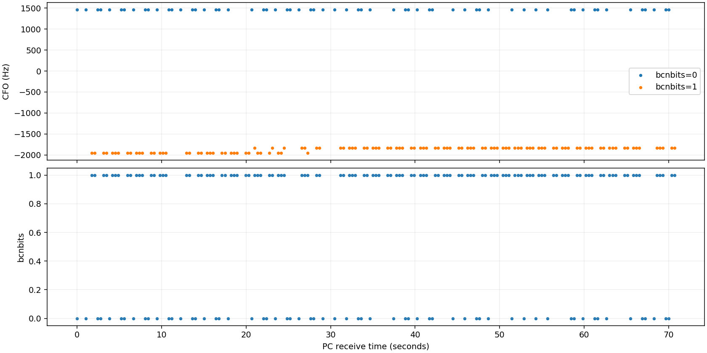

有效窗口接收 178 条；bcnbits 集合外错误 0 条； CFO 变化 83 次；bcnbits 变化 79 次。
缺失为日志记录缺失估计，不能直接归因于射频丢包。边界保护区及未完成频点不进入有效窗口统计。 CFO 分组及频差残差为描述统计，没有独立参考时不判定逐帧来源正确性；重叠分组视为无法区分。 未观测到错误不代表全部广播均正确解析。

{
"samples": 178,
"bcnbits_errors": 0,
"bcnbits_error_ratio": 0.0,
"cfo_changes": 83,
"bcnbits_changes": 79,
"cfo_change_same_bits": 4,
"missing_records_estimate": 25,
"missing_count_scope": "lower_bound_between_observed_records_only",
"uncertain_intervals": 0,
"joint_distribution": [
{
"bcnbits": 0,
"cfo_hz": 1465,
"count": 62
},
{
"bcnbits": 1,
"cfo_hz": -1954,
"count": 37
},
{
"bcnbits": 1,
"cfo_hz": -1832,
"count": 79
}
],
"cfo_groups": {
"0": {
"count": 62,
"cfo_median": 1465.0,
"cfo_min": 1465,
"cfo_max": 1465
},
"1": {
"count": 116,
"cfo_median": -1832.0,
"cfo_min": -1954,
"cfo_max": -1832
}
},
"association": "separated_observed_groups",
"raw_samples": 178,
"malformed_count": 0,
"frame_period_ms": 350,
"period_source": "inferred",
"tdd_count": 10,
"bits_a": 0,
"bits_b": 1,
"joins": 1,
"rejoined": 0,
"disconnect_events": 0,
"windows": [],
"points": [],
"baseline_a": {
"samples": 0,
"a_samples": 0,
"unexpected_bcnbits": 0,
"cfo_median": null,
"cfo_min": null,
"cfo_max": null,
"rssi_median": null,
"snr_median": null
},
"joined_window_including_same_receive_block": {
"samples": 176,
"bcnbits_errors": 0,
"bcnbits_error_ratio": 0.0,
"cfo_changes": 82,
"bcnbits_changes": 78,
"cfo_change_same_bits": 4,
"missing_records_estimate": 22,
"missing_count_scope": "lower_bound_between_observed_records_only",
"uncertain_intervals": 0,
"joint_distribution": [
{
"bcnbits": 0,
"cfo_hz": 1465,
"count": 60
},
{
"bcnbits": 1,
"cfo_hz": -1954,
"count": 37
},
{
"bcnbits": 1,
"cfo_hz": -1832,
"count": 79
}
],
"cfo_groups": {
"0": {
"count": 60,
"cfo_median": 1465.0,
"cfo_min": 1465,
"cfo_max": 1465
},
"1": {
"count": 116,
"cfo_median": -1832.0,
"cfo_min": -1954,
"cfo_max": -1832
}
},
"association": "separated_observed_groups"
},
"cfo_bcnbits_relation_counts": {
"consistent_with_observed_groups": 178
}
}